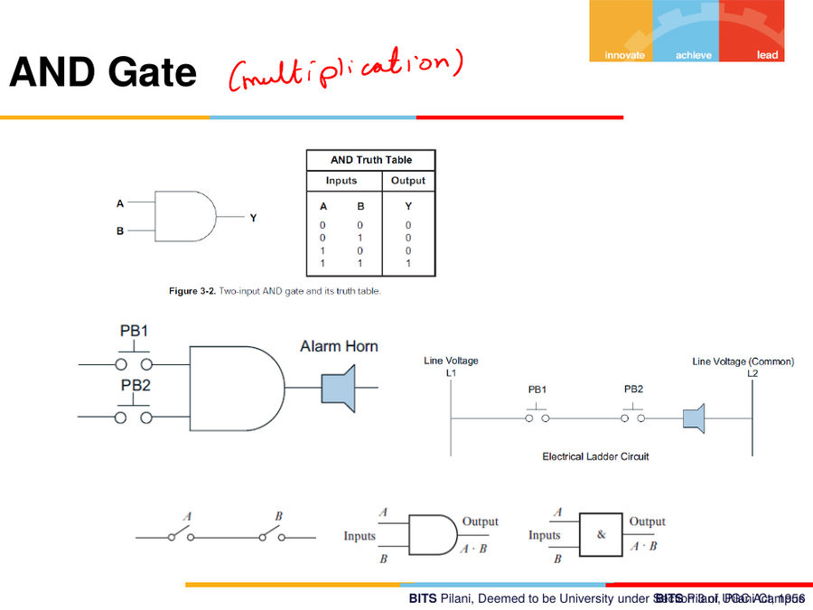
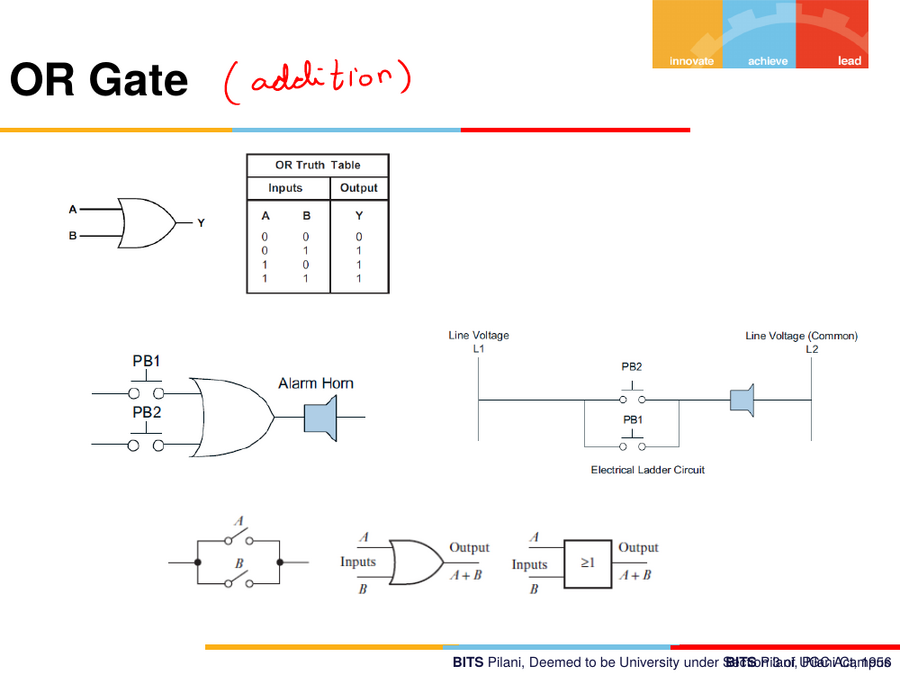
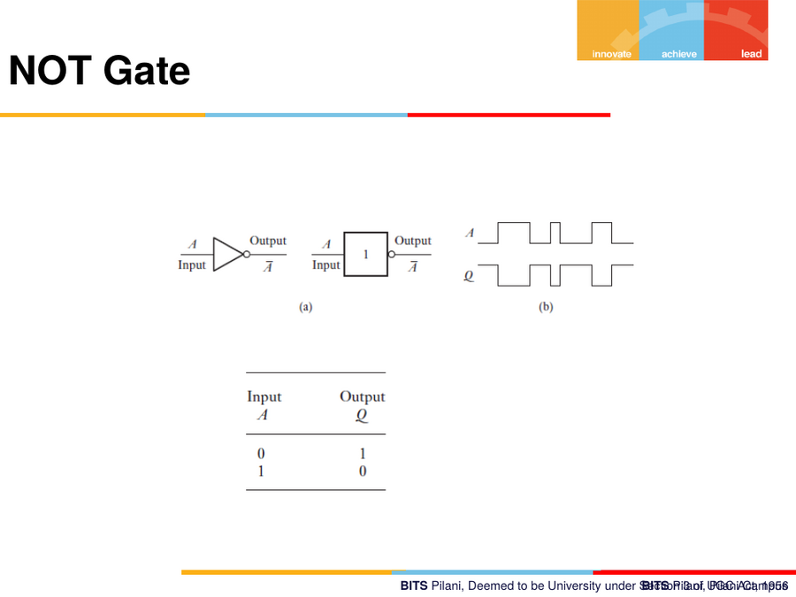
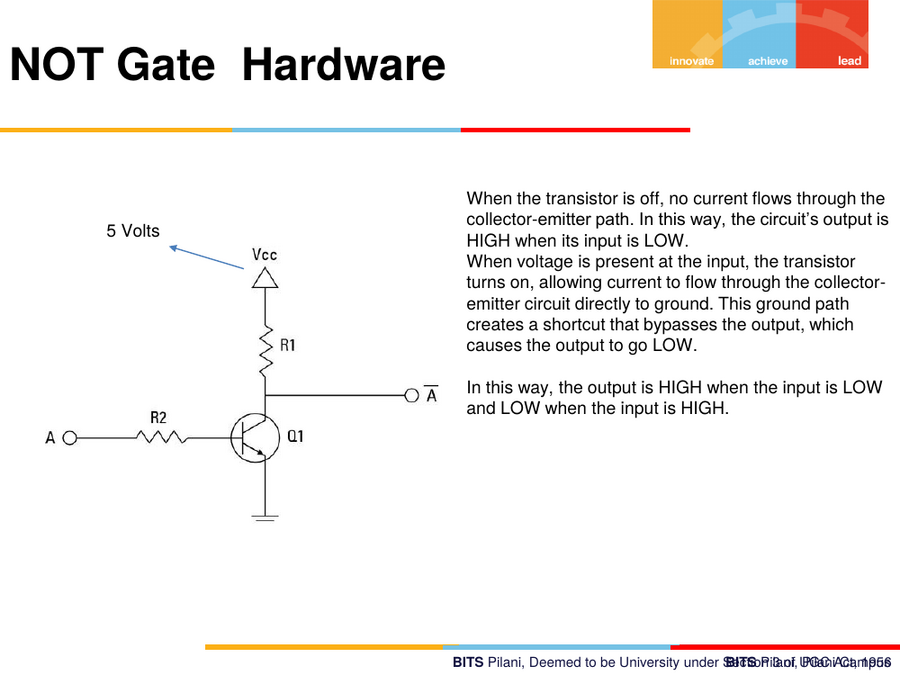
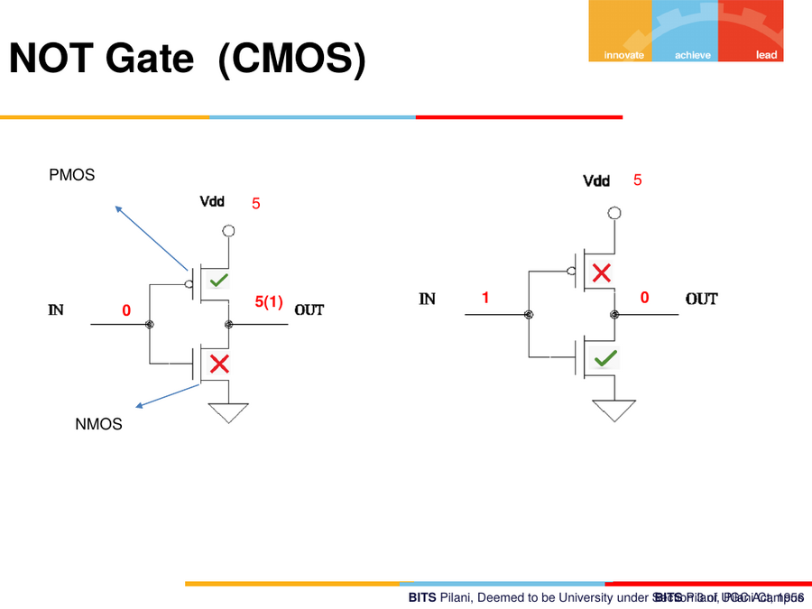
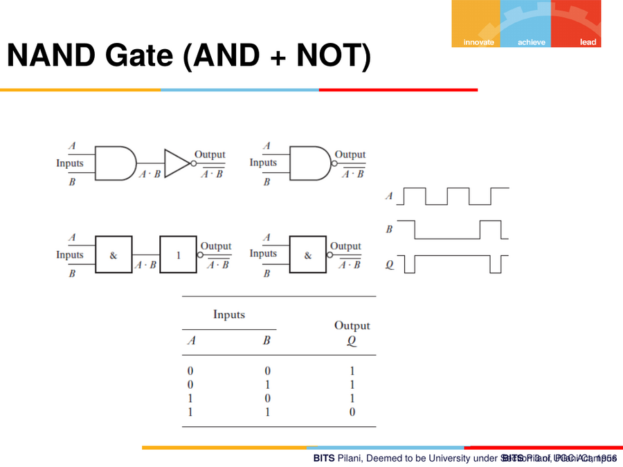
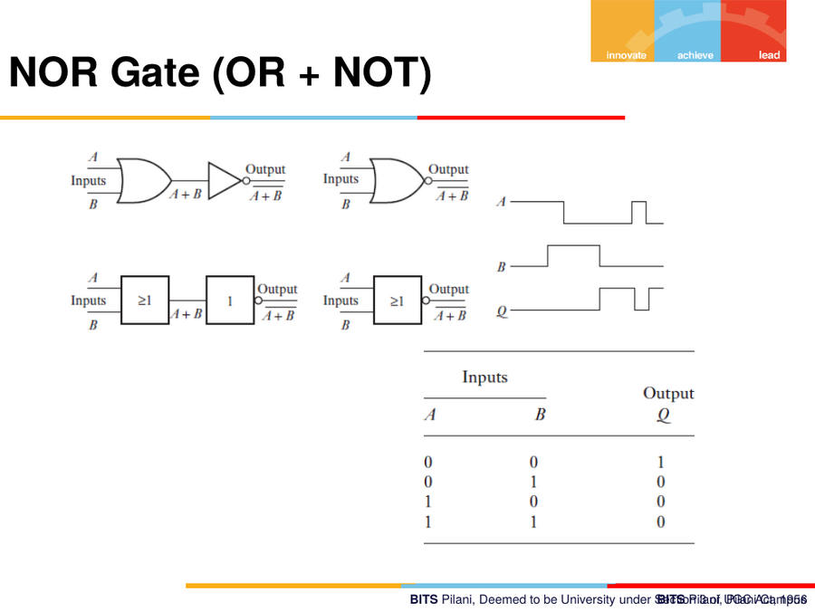
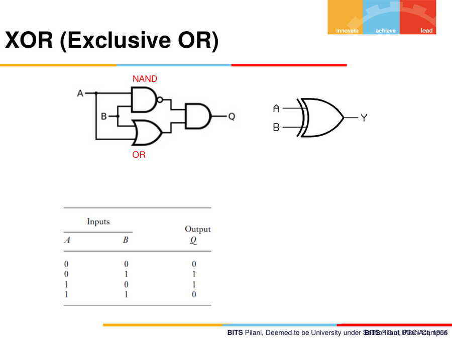
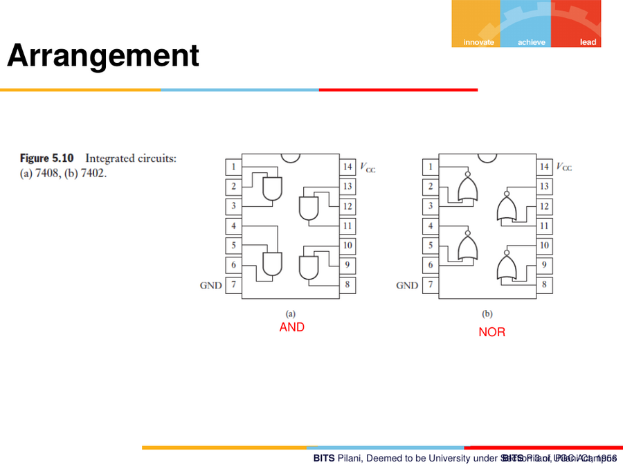

12. Digital Logic — Gates
Framed in class as "Digital electronics (for reference)" — the foundational gate-level material needed before ECUs/digital fundamentals are covered in depth later in the course.
12.1 AND Gate — "multiplication"
Y = A · B
| A | B | Y |
|---|---|---|
| 0 | 0 | 0 |
| 0 | 1 | 0 |
| 1 | 0 | 0 |
| 1 | 1 | 1 |
Output is HIGH only if all inputs are HIGH — behaves like Boolean multiplication (product of 0s and 1s).
Applications shown: a two-input push-button AND-gate driving an alarm horn (both PB1 and PB2 must be pressed); an electrical ladder-logic diagram equivalent, where two contacts in series implement the same AND function (only conducts if both switches are closed).

12.2 OR Gate — "addition"
Y = A + B
| A | B | Y |
|---|---|---|
| 0 | 0 | 0 |
| 0 | 1 | 1 |
| 1 | 0 | 1 |
| 1 | 1 | 1 |
Output is HIGH if any input is HIGH — like Boolean addition.
Applications: an alarm horn triggered by either PB1 or PB2; the ladder-logic equivalent is two contacts in parallel (conducts if either switch is closed).

12.3 NOT Gate (Inverter)
Q = Ā (Q = NOT A)
| A | Q |
|---|---|
| 0 | 1 |
| 1 | 0 |
Simply inverts the input — a square wave in produces the inverted square wave out.

NOT gate — transistor-level hardware implementation
A single BJT (or MOSFET) with a pull-up resistor implements a NOT gate:
- Input LOW → transistor OFF (no collector-emitter current) → output pulled HIGH through R1 (to Vcc).
- Input HIGH → transistor ON (saturated) → collector-emitter path becomes a near-short to ground → output pulled LOW.
"When the transistor is off, no current flows through the collector-emitter path. In this way, the circuit's output is HIGH when its input is LOW. When voltage is present at the input, the transistor turns on, allowing current to flow through the collector-emitter circuit directly to ground. This ground path creates a shortcut that bypasses the output, which causes the output to go LOW."

NOT gate — CMOS implementation
A CMOS inverter uses a PMOS transistor (top, source tied to Vdd) and
an NMOS transistor (bottom, source tied to ground), gates tied
together as the input:
- Input = 0: PMOS ON, NMOS OFF → output pulled to
Vdd(logic 1). - Input = 1: PMOS OFF, NMOS ON → output pulled to ground (logic 0).
Exactly one of the two transistors conducts at a time — this is why CMOS gates draw almost no static current, a major reason CMOS dominates modern digital ICs.

12.4 NAND Gate (AND + NOT)
Q = A·B̄ (NOT(A AND B))
| A | B | Q |
|---|---|---|
| 0 | 0 | 1 |
| 0 | 1 | 1 |
| 1 | 0 | 1 |
| 1 | 1 | 0 |
Built as an AND gate followed by a NOT (bubble on the output of the AND symbol). Waveform: output is HIGH except when both inputs are simultaneously HIGH.

12.5 NOR Gate (OR + NOT)
Q = A+BÌ„ (NOT(A OR B))
| A | B | Q |
|---|---|---|
| 0 | 0 | 1 |
| 0 | 1 | 0 |
| 1 | 0 | 0 |
| 1 | 1 | 0 |
Output is HIGH only when both inputs are LOW.

12.6 XOR (Exclusive OR) Gate
Y = A ⊕ B
| A | B | Q |
|---|---|---|
| 0 | 0 | 0 |
| 0 | 1 | 1 |
| 1 | 0 | 1 |
| 1 | 1 | 0 |
Output is HIGH only when the inputs differ. Can be built from NAND + OR gates combined (shown on the slide as an alternate implementation), reflecting that any logic function can be built purely from NAND (or purely from NOR) gates — a "universal gate" property.

12.7 Real IC packages
Standard logic-gate ICs (e.g. the classic 74-series) package multiple gates per chip with standard pin numbering:
- 7408 — Quad 2-input AND gates
- 7402 — Quad 2-input NOR gates
Each chip has power (V_CC) and ground (GND) pins, plus multiple
independent gate blocks sharing the package.

12.8 Quick-reference truth table summary
| Gate | Symbol | Output HIGH when |
|---|---|---|
| AND | A·B |
All inputs HIGH |
| OR | A+B |
Any input HIGH |
| NOT | Ā |
Input is LOW |
| NAND | (A·B)‾ |
NOT all inputs HIGH |
| NOR | (A+B)‾ |
All inputs LOW |
| XOR | A⊕B |
Inputs differ |